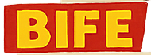
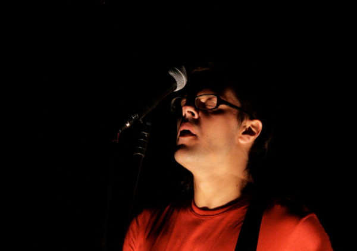

Prêmio Klauss Vianna (Funarte/Petrobras). Projeto realizado em conjunto com Wagner Schwartz (orientação), Princesa Ricardo Marinelli, Octávio Camargo e Fábia Regina. Resultou em peça solo. Fotografia: Alessandra Haro. Estreia no Teatro Reikrauss Benemond, Curitiba. Apresentado também no Itaú Cultural e no Sesc Consolação (São Paulo), no Festival Interação e Conectividade (Salvador), no Sesc Copacabana (Rio de Janeiro), no Festival EnCena (Porto Alegre) e na Bienal Sesc de Dança (Campinas).
A pesquisa partiu de Antonin Artaud, da artista plástica britânica Anne Van der Linden e do punk GG Allin. Um solo criado por muitas pessoas. Eu estava em cena com a minha perspectiva e mais o olhar de todos esses artistas.

Prêmio Klauss Vianna (Funarte/Petrobras). Criação com Elisabete Finger e Michelle Moura.